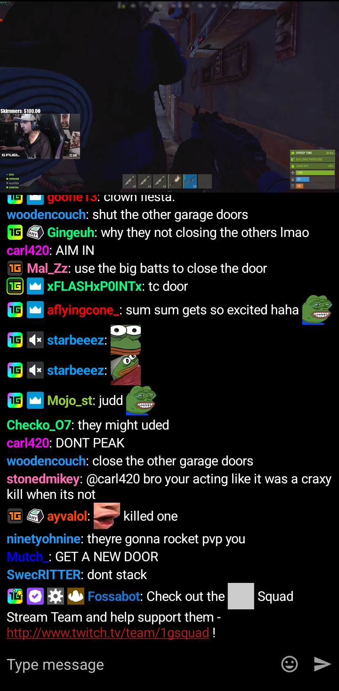
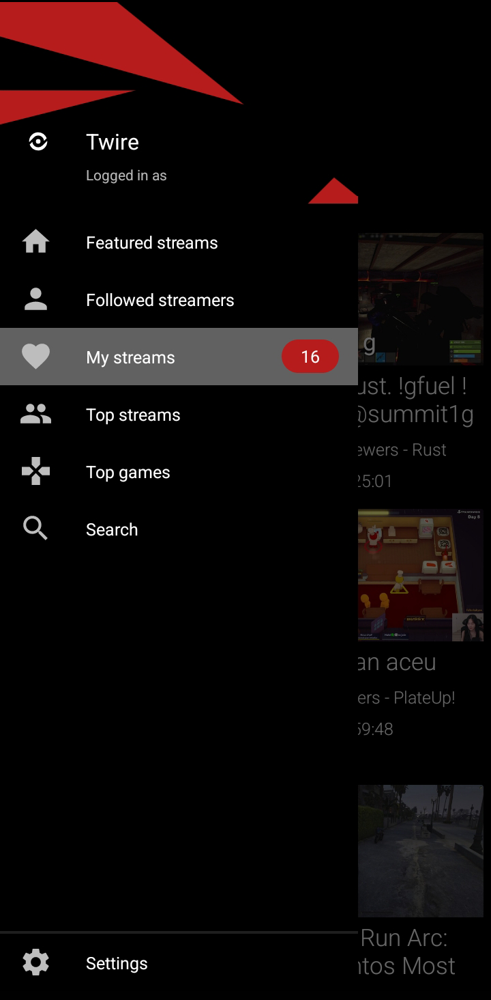

Twire 快问快答：为什么 Twitch 观众都在找这个客户端
Twire 是一款开源的 Twitch 第三方安卓客户端，本文用问答形式梳理它的核心特性、安装方法、后台播放机制、BTTV 表情支持等高频问题。
整理一篇关于 Twire 的快问快答——如果你在 Android 上看 Twitch 直播，大概率已经听过这个名字。它不是换皮官方客户端，而是从零实现的一个开源替代方案，功能点精准戳中了 Twitch 官方安卓版的几处痛处。下面按用户最关心的顺序问起来。
Twire 到底是什么？和官方 Twitch 客户端有什么区别？
Twire 是一个免费、开源、无广告的 Twitch 第三方安卓客户端，它的官网上能看到全部功能介绍。核心区别只有两个：无广告 和 支持第三方表情扩展。官方安卓版每隔几分钟就插一次 15~30 秒的 preroll 广告，Twire 全程没有任何插播；官方客户端不支持 BTTV、FFZ、7TV 这些社区表情扩展，Twire 原生就把 BTTV 表情拉进来渲染了。除此之外，后台播放、画中画、锁屏播放这些基础能力，Twire 也比官方版做得更干净——官方版锁屏后大概率会被系统杀掉，Twire 用了 Android 前台服务机制来抗这件事。
谁需要装 Twire？
三类人基本对号入座：经常在手机上看 Twitch 直播的人、厌烦官方广告的人、混 Twitch 聊天室、离不开 BTTV 表情的重度用户。如果你偶尔看看，官方客户端也能凑合用；但只要你每天刷超过一小时，Twire 的无广告体验和 BTTV 支持会立刻让你回不去。另外，Twire 是 F-Droid 收录的开源项目，不依赖 Google Play 就能装，对不想装全家桶的用户也友好。

怎么安装？需要卸载官方客户端吗？
直接拿安装包装就行，不需要 root，也不需要卸载官方客户端——两个可以共存。安装包从下载页面拿到，F-Droid 上也有。首次启动后登录 Twitch 账号（可选，不登录也能看直播，只是用不了订阅流），然后在播放器设置里确认一下默认清晰度和后台播放开关就可以开始用了。整个过程不超过三分钟。
分类浏览怎么用？能发现新频道吗？
分类浏览是 Twire 发现新内容的入口。它直接按 Twitch API 返回的游戏分类分组，热门 MOBA、FPS 大类排在前面，小众分类靠后。每个分类卡片显示当前正在直播的频道数量和缩略图，点进去就是按观看人数从高到低排列的频道列表——和官方客户端不同的是，Twire 不在分类卡片里插侧边广告，同屏能展示更多分类，列表也不做任何推荐干预，完全按原始数据展示。典型用法：想找某个特定游戏的直播，直接进对应分类；想看看当前最火的游戏有哪些，扫一眼分类列表就有数了。

后台播放和锁屏为什么能保持？官方客户端就不行？
这是 Twire 最实用的特性之一，原理在 Android 系统层面。Twire 把后台播放注册成了 前台服务（Foreground Service），调用了 Android 的 startForeground() API。前台服务机制要求应用同时在通知栏创建一个常驻通知——告诉系统"我在后台做正事，别杀我"，系统在低内存清理时会优先放过带前台服务的进程。Twire 的 F-Droid 权限清单里第一项就是 run foreground service，这就是锁屏播放的核心权限。
官方客户端其实也用了前台服务，但在国产 ROM 上被砍得厉害——小米、OPPO、vivo、华为对后台进程管理更激进，即使开了前台服务，锁屏一段时间后还是可能被系统杀掉。解决办法是把 Twire 加入电池优化白名单（不同 ROM 里可能叫"自启动""后台冻结"或"省电策略"），强制允许后台运行。锁屏时通知栏的播放控件也可以操作，暂停、切频道、关闭都不需要解锁手机。
BTTV 表情在 Twire 里怎么显示？需要额外装插件吗？
不需要任何插件，Twire 原生支持 BTTV（BetterTTV），默认就开着。BTTV 是 Twitch 社区最流行的表情扩展，由独立开发者维护——官方 Twitch 允许主播上传自定义表情但数量有限、审核严格，BTTV 绕过了这个限制，让任何频道都能拥有更多更灵活的自定义表情。Twire 直接拉取并渲染频道的全部 BTTV 表情，包括频道专属的和全球共享的，在聊天输入框里输入表情名（比如 LUL、KEKW、POGGERS）就自动替换成动画或静态图片。Twitch 官方安卓客户端到现在还是完全不支持任何第三方表情扩展，这一点是 Twire 最大的差异化卖点，更细的表情配置项去Twire文档里查。
通知栏那个播放控件是怎么回事？能关掉吗？
Twire 进入后台播放或画中画模式后，Android 通知栏会常驻一个播放控件——这是前台服务机制的强制要求，不能手动关闭。通知上显示的信息包括应用名、当前频道名、播放状态图标，Android 5.0+ 还会显示频道缩略图。控件按钮一般有四个：播放/暂停、上一频道、下一频道、关闭。Android 11+ 上这些控件还能在锁屏界面显示，不需要解锁就能操作。想关掉这个通知，只有停止播放或退出 Twire。
有没有什么坑需要提前知道？
两个点值得提。第一，国产 ROM 的后台管理：即使开了前台服务，小米 MIUI、OPPO ColorOS、vivo OriginOS、华为 EMUI 这些 ROM 锁屏后还是可能杀进程。解决办法就是把 Twire 加入电池优化白名单，不同 ROM 的设置入口不一样，但核心就是强制允许后台运行。第二，广告拦截的边界：Twire 不插 preroll 广告，但如果主播自己在直播间里嵌了第三方广告链接（比如 BTTV 里加的），Twire 不处理这部分——这和官方客户端也一样，不是 bug。
和同类替代方案比，Twire 怎么样？
Twire 的定位是"功能全面、无广告、开源"的 Twitch 客户端。如果只看后台播放，还有一些更轻量的播放器能做到；但同时做到后台播放 + BTTV 表情 + 订阅流 + 分类浏览 + 无广告的，Twire 是最完整的。界面设计走的是 Material You 路线，观感清爽不花哨。F-Droid 收录意味着你不用从不知名站点装 APK，签名和更新都有保障。
最后一句
如果你在 Android 上刷 Twitch 直播，装就对了——无广告、原生 BTTV、靠谱的后台播放，这三条加起来就够把官方客户端换掉。整理这份快问快答时参考的资料，在 GitHub、Gitee 和 GitCode 三个仓库都有同步，想深挖细节选哪个顺手就用哪个。